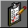

| ||||
Tasks view displays the list of all outstanding tasks associated with the current Web site. Tasks are items that need your attention before you publish the Web site.
In the previous exercises, you added tasks to a list when you deferred certain actions. For example, when you checked the spelling of the pages in your Web site, you chose to add a new task for each page containing misspellings. By adding tasks to the list, you can complete such corrections all at once.
If you are working in a Web site development environment or on an intranet, Tasks view makes it easy to track Web site tasks and assign them to other authors who work on the same Web site.
To complete tasks in Tasks view

Tasks iconFrontPage displays the Tasks list.
FrontPage displays the Task Details dialog box. Here, you can see details about the task you're selected. You can set the priority of the task, assign it to another author on your network, or complete the task and remove it from the list.
FrontPage switches to Page view and opens the page containing the misspelled words.
FrontPage shares custom dictionaries with other Microsoft Office applications, so you don't need to add custom words in each application separately.
When you add verified words to your dictionary, they will not be questioned again.
FrontPage completes the spelling check. If you want to, you can now return to Tasks view and mark this task as completed.
Although it is not required that you complete every task before publishing your Web site, it is a good idea to review this list when you are finished making changes to the Web site. Tasks view helps you manage Web sites by flagging important reminders for you.
Did you find this material useful? Gripes? Compliments? Suggestions for other articles? Write us!
© 1999 Microsoft Corporation. All rights reserved. Terms of use.